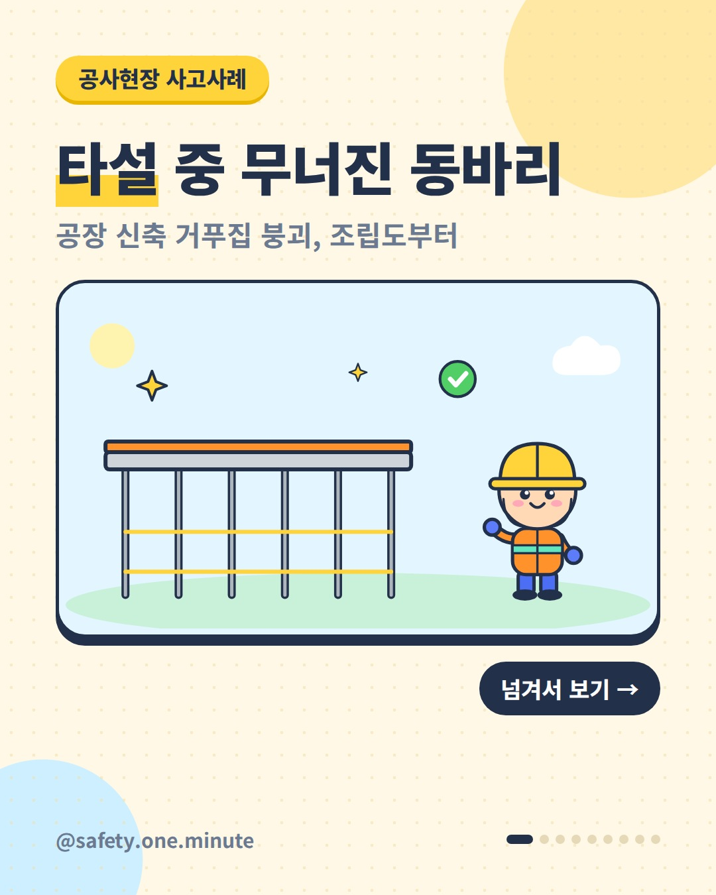
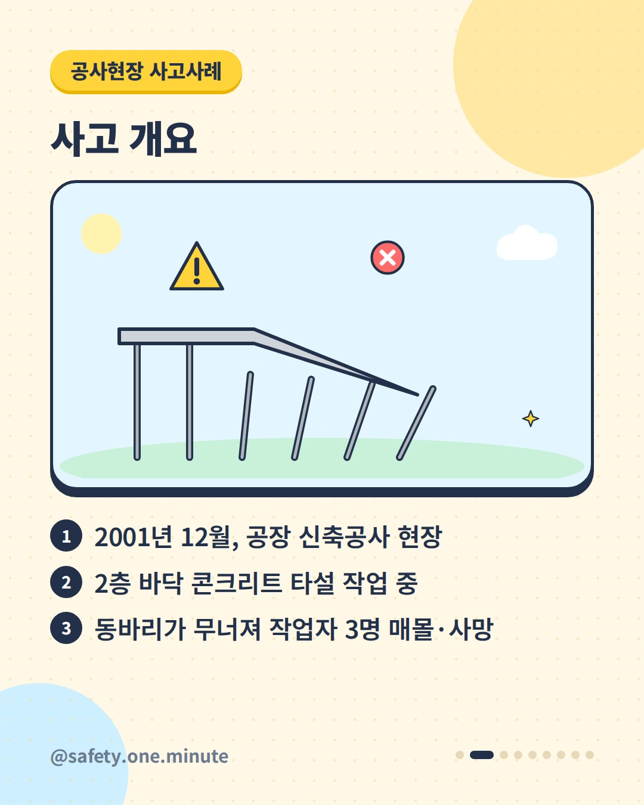
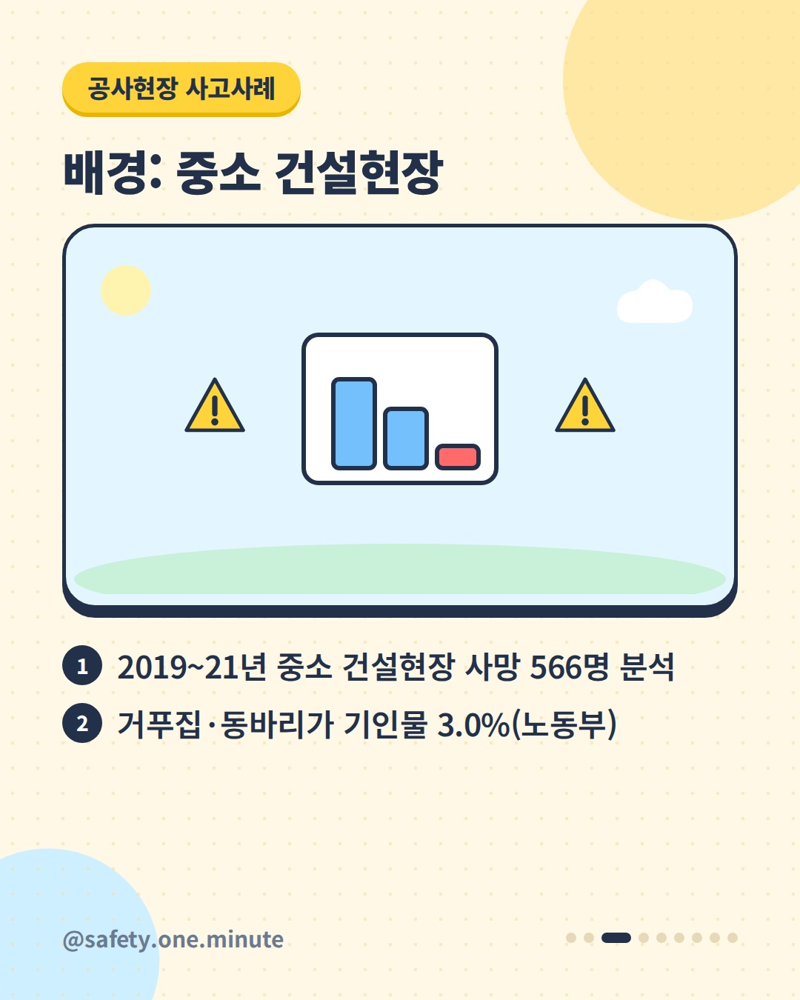
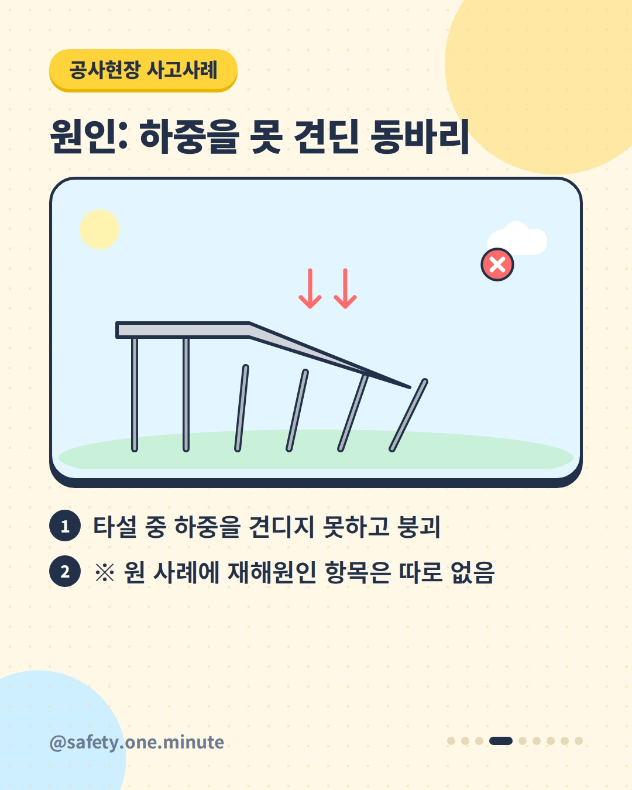
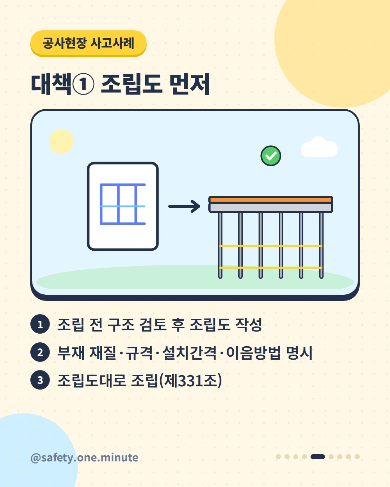
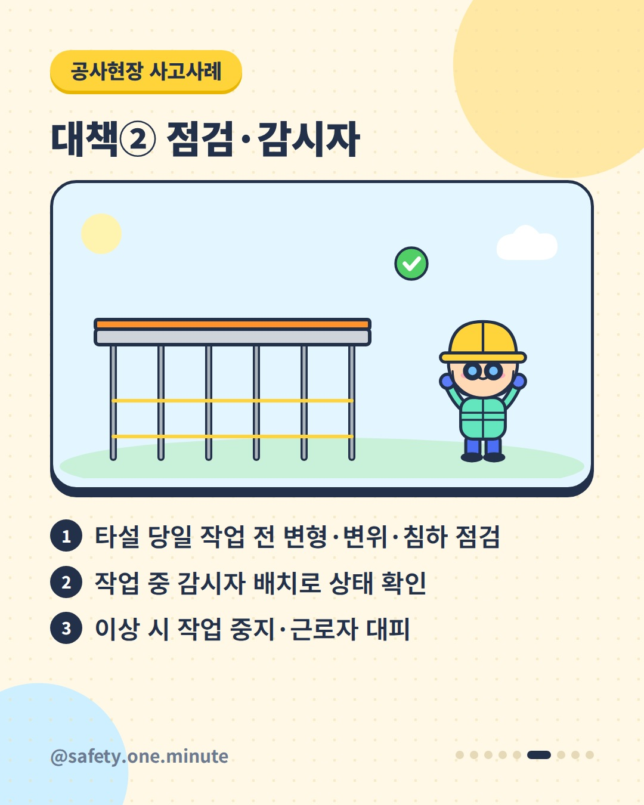
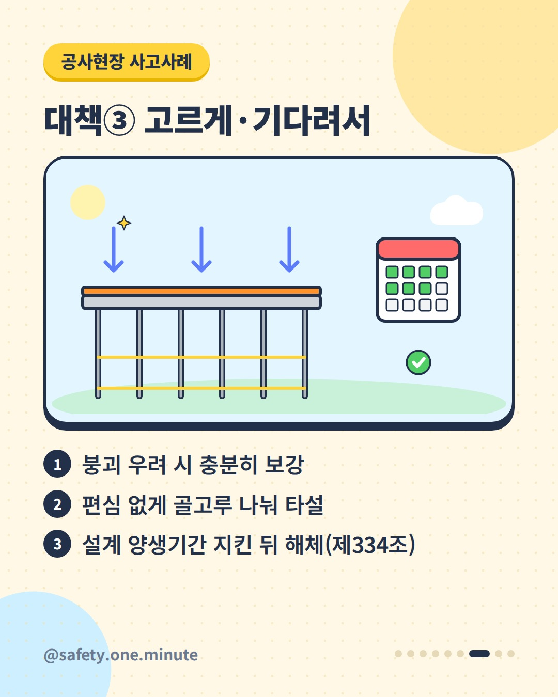
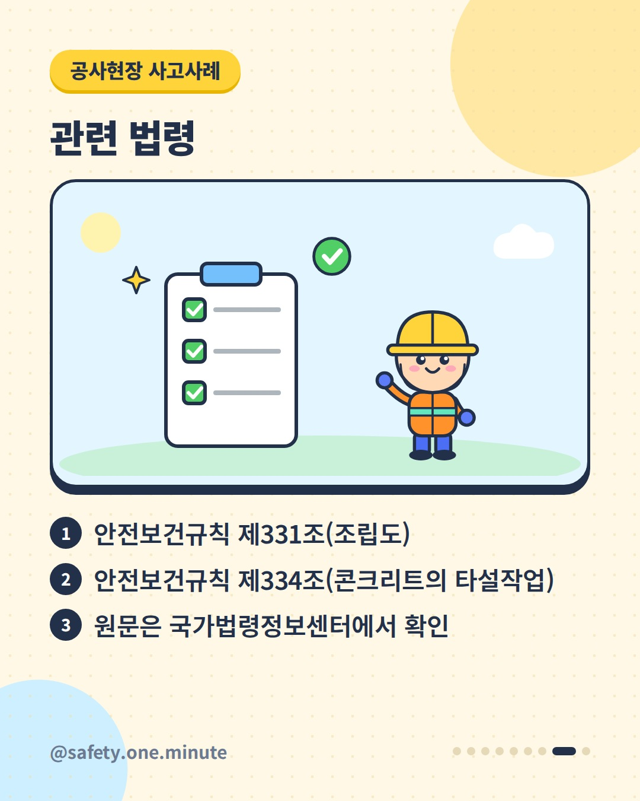
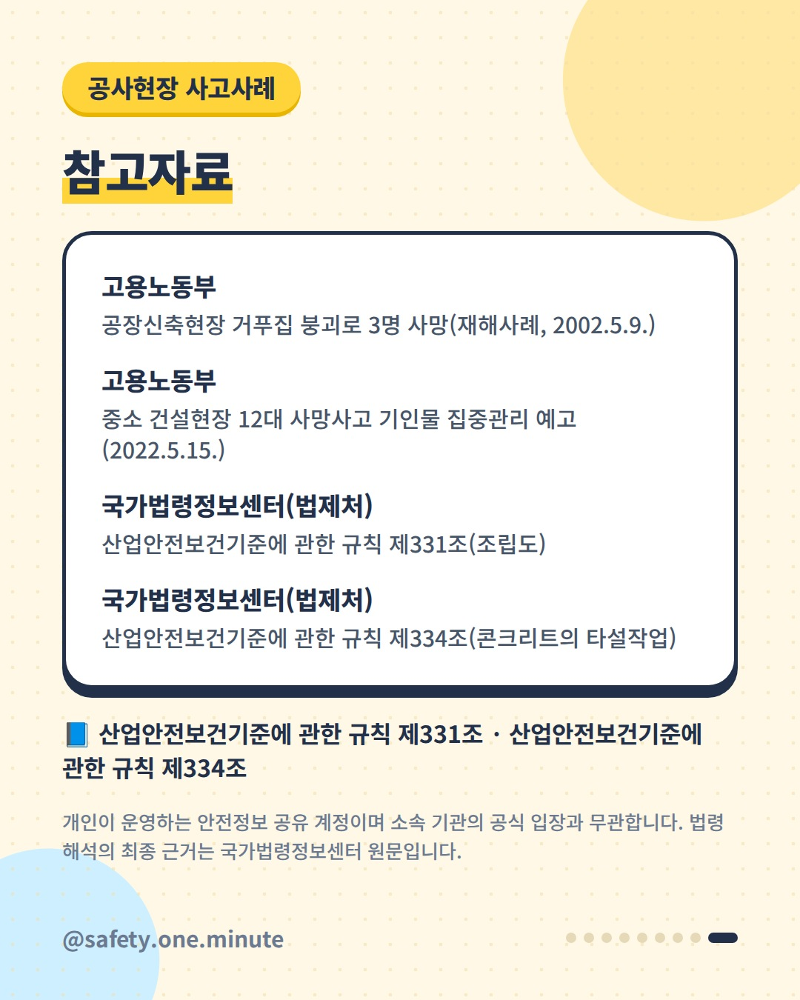

타설 중 무너진 동바리 — 9장 (4:5)









캡션
콘크리트를 붓는 순간, 그 무게를 받치는 건 동바리입니다. 고용노동부가 공개한 재해사례입니다(2001년). 한 공장 신축공사 현장에서 2층 바닥 콘크리트를 타설하던 중, 하중을 견디지 못한 거푸집 동바리가 무너져 작업자 3명이 매몰돼 숨졌습니다. 고용노동부가 2019~2021년 중소 건설현장 사망자 566명을 분석한 결과(2022), 거푸집·동바리는 사망사고 기인물의 3.0%였습니다. 현행 산업안전보건기준에 관한 규칙은 이렇게 정하고 있습니다. ① 조립 전 구조를 검토해 조립도를 작성하고(재질·규격·설치간격·이음방법 명시) 그대로 조립(제331조) ② 타설 당일 작업 전 변형·변위·침하 점검, 작업 중 감시자 배치, 이상 시 작업 중지·대피(제334조) ③ 붕괴 우려 시 보강, 편심 없이 골고루 타설, 설계 양생기간을 지킨 뒤 해체(제334조) ※ 사고 당시 법령과 현행 법령은 다를 수 있습니다. 세부 요건은 법령 원문(2025.9.1. 시행본 기준)을 확인하세요. 출처: - 고용노동부 – 공장신축현장 거푸집 붕괴 재해사례(2002) - 고용노동부 – 중소 건설현장 12대 사망사고 기인물(2022) - 국가법령정보센터(법제처) – 산업안전보건기준에 관한 규칙 제331조·제334조 개인이 운영하는 안전정보 공유 계정이며 소속 기관의 공식 입장과 무관합니다. 법령 해석의 최종 근거는 국가법령정보센터 원문입니다. #거푸집 #동바리 #콘크리트타설 #붕괴사고 #건설안전 #사고사례